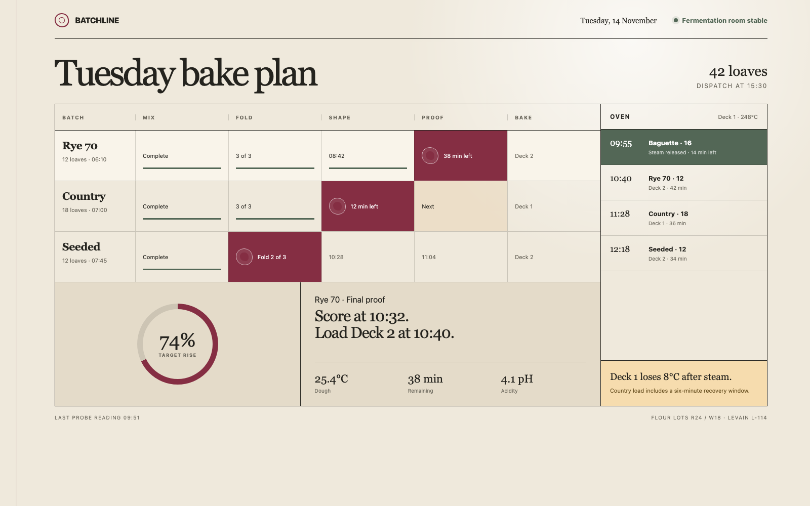
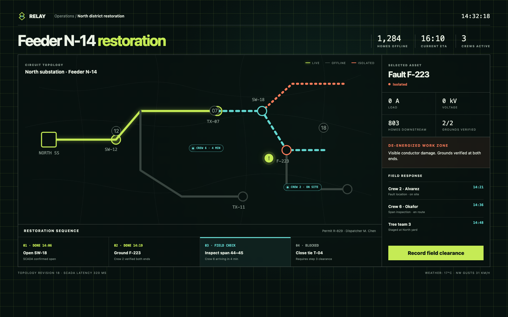
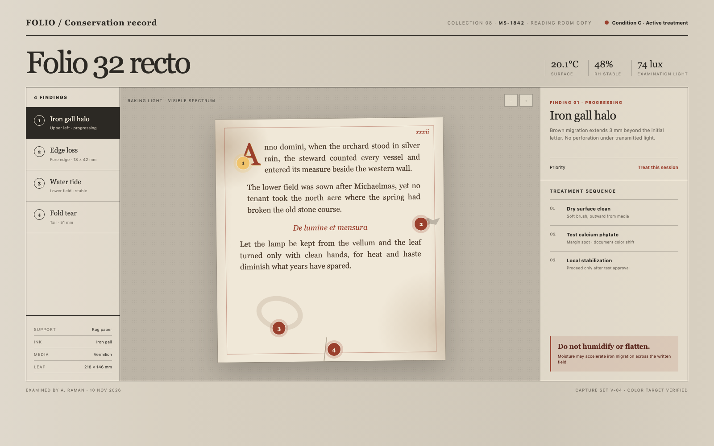

01 / 03BatchlineFermentation progress and oven recovery turn a bakery schedule into a living production line.Open page
02 / 03RelayElectrical topology, isolation state and field clearance control the reading order—not dashboard conventions.Open page
03 / 03FolioThe artifact remains central while findings and treatment steps stay spatially tied to the leaf.Open page